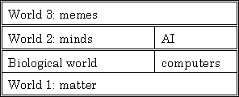
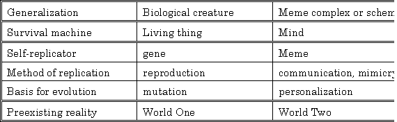
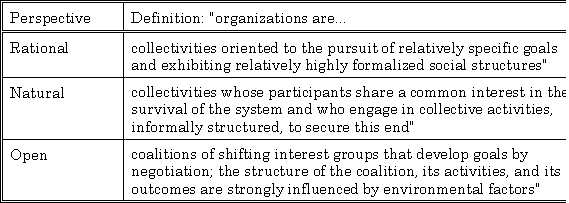
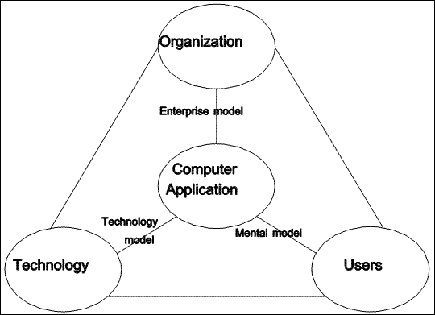

The purpose of this chapter is to establish a broad conceptual framework, so that author and reader may create together a more elaborate understanding of the nature of TOOL and the role it is expected to play in human endeavors. The conceptual framework consists of the philosophical and social context from which this work derives, and leads naturally to a discussion of organizations. Finally, we present the results of interviews with people responsible for the data of some real organizations.
Database systems are designed and used by people functioning as individuals, generally working in groups, to achieve both personal and organizational objectives. The information held in such systems must correspond to certain realities in order to be of value. We, therefore, begin with a brief examination of the nature of reality, and a look at what it means for data to correspond to appropriate realities.
Ontology is concerned with the nature of that which exists or is. An ontological position is of value both because a database system is itself something which exists and because it contains information concerning things which exist.
We begin with an examination of the nature of things which exist, using Popper's (1972) categorization of existents into three worlds. Then we turn to an investigation of how these existents come into being and survive. Finally, we consider the role played by information in their creation, and continued existence.
Popper divides those things which exist into three categories, which he calls worlds.
World one is the objective world of physical reality. It is assumed to pre-exist, and to exist independently of, any sentient observer. This world provides the subject matter for the physical sciences, and contains their practitioners. These people, and indeed all of us, to one degree or another, attempt to make sense of, predict the behavior of, and control that which exists in world one.
World two is the subjective, mental world of the individual observer, created in response to his or her experience with world one. This world provides the subject matter for many of the social sciences, and contains the minds of their practitioners. One of these, the psychotherapist Kelly (1955), has proposed that the essential work of each human being is to construct a model of reality, which he or she then uses to explain, predict, and control events and objects in world one. Each model so constructed exists in world two, and each world two entity is separate and distinct, since each belongs to an individual human being. Though there is no direct access from one to another, individuals do communicate aspects of their mental worlds to each other, influencing indirectly the constructs of others. This can result in the creation of entities which transcend the individual mind.
World three is the world of independent ideas or concepts. This world provides the subject matter for the rest of the social sciences, and contains all sciences, and many other such things. World three entities, though they arise in an individual mind, have an independent existence. It is commonplace to say of such things that, "they have a life of their own." They include slogans, jingles, works of music, tribes, organizations, cultures, philosophies, and civilizations. Dawkins (1989) calls the simpler of these "memes", (rhymes with scheme) and the more substantial "meme complexes."
This classification of existents into three worlds is itself an inhabitant of world three, and is even now ensuring its continued existence by leaping from the author's mind to yours, gentle reader, via a world one artifact: this thesis, which has allowed it to travel through both time and space.
Regardless of the world to which it belongs, each entity comes into existence, survives for a time, and, finally, ceases to exist. Monod (1972) makes the distinction between endogony and exogenous creation -- the difference between coming into being actively by internal forces, and creation through the action of pre-existing external agents. The former has also been termed "autopoiesis" (Maturana & Varela, 1980).
|  |
| Figure 2.1 Popper's three worlds |
There are existents which come into being through each of these methods in each of the three worlds. Living things in world one are endogenous, while other objects are artifacts created by living things or natural forces. Thus, world one includes human beings, musical instruments, and computers. Each of these kinds of things must exist in world one to support the existence of world two entities such as minds, music, and software (Hofstadter, 1979). The existence of human minds and artificial intelligence programs in world two provide a substrate on which world three entities can come into being.
Such world three entities can in turn, exert an extremely powerful and creative influence on both world two and world one. Thus a slogan, jingle or tune becomes a part of the personal construct in the mind of a human being. A religion may require its adherents to proselyte others, committing them to its precepts, or it may motivate the erection of great cathedrals and other monuments. A science directs the construction of enormous particle accelerators, radio telescopes, and projects artifacts far from the earth's surface and out into the solar system and beyond.
Figure 2.2 presents an analogy, due to Monod (1972), between life on a substrate of the physical world and meme complexes or "schemes" (a term suggested by Hofstadter (1985)) on a substrate of the mental world.
|  |
| Figure 2.2 Monod's analogy |
In each case, a self-replicator arises spontaneously from a pre-existing reality. Because it possesses a method for self-replication (exercised mindlessly), it exists in numerous copies. Since the method of replication is not completely accurate each copy may be slightly different. This provides a basis for evolution: errors in replication lead to differential ability to survive for individuals with certain characteristics. Those individuals which survive reproduce to make more individuals with similar characteristics. Hence their characteristics come to dominate the population of individuals.
Dawkins (1989) points out that there are two perspectives from which this natural selection can be viewed: that of the genes and that of the individual. Genes survive by coding for "survival machines" which are successful in ensuring their reproduction. For genes, in general, to survive, intelligence is in and of itself of limited value. Genes coding for insects are much more successful than those coding for intelligence.
Memes and schemes, however, require intelligent life for survival. "Just as genes propagate themselves in the gene pool by leaping from body to body via sperms or eggs, so memes propagate themselves in the meme pool by leaping from brain to brain..." (Dawkins, 1989). As our genes construct a human being for temporary survival, so successful schemes must motivate their hosts in some way, such as an appeal to altruistic tendencies (which Dawkins showed to be beneficial for the survival of genes), intrinsic rewards such as humor, and rewards which promote the survival of their hosts. The last of these is probably the most powerful.
Many schemes take the notion of survival to its logical conclusion and offer immortality. Both genes and memes are longer-lived than individual human beings, so that a human being is not a survivor to the same degree of success as a gene or a meme. This may be part of what makes an offer of immortality so irresistible. The offer can come in one of two flavors: immortality as the author or founder of a successful meme (as in leaving one's name on a scientific theory or a hospital), and literal immortality of the individual (as offered by many western religions).
Speaking of survival value, this thesis has survival value in several ways. It will contribute in a modest way to the survival of the University. It will contribute to the survival of its author (as suggested by the thinly veiled implication lurking in the disjunction "publish or perish"). Furthermore, it will motivate and enable the author to make other contributions to the survival of that grander scheme, which transcends any particular university: Higher Education.
The information encoded by the gene is the real motor of survival, for it is not the individual molecule which survives, but rather the pattern of its nucleotides. This pattern is pure information. The possibility that this kind of information might be interpreted one day for extinct animals is a topic of current fascination (Crichton, 1990).
Survival occurs because the pattern expresses itself (through mechanisms it also encodes) by creating its survival machine. "A body is the genes' way of preserving the genes unaltered" (Dawkins, 1989).
The invention of writing has been a founding factor in the rise of each of the early great civilizations. Various degrees of information creation and transfer is required to ensure the continued existence or survival of individuals which exist. Information has been viewed by Kraft (1979) as a form of energy.
Information has long been recognized as essential in agriculture.
"Modern farming, as the author views the subject, requires varied information as well as unflagging zeal and industry. It needs the application of commercial ideas. Real success in agriculture can only be attained by keeping up with changing conditions and developing a well-balanced business programme to go with the tilling of the soil... No one appreciates more fully than he (the farmer) what a great fund of information a person must possess to be even an ordinary farmer." (Bowsfield, 1916)
In fact, now that "fewer than 2 percent of the work force [is] engaged in agriculture... knowledge-based agriculture may be the cutting edge of economic advance tomorrow" (Toffler, 1990).
Epistemology is the branch of philosophy which deals with knowledge and truth.
Different theories of truth have been proposed and apply to entities which exist in the three worlds. The correspondence theory of truth proposes that a statement is true if and only if it corresponds to a fact in the world. This is quite sensible for statements about world one (Popper, 1982).
It is less useful for world two, however. Since a mind is commonly in receipt of contradictory or conflicting perceptions (Barwise & Perry, 1983), there would be little utility in drawing all of the logical conclusions. When reasoning from contradictory premises, pure logic requires concluding that any and all statements must be true. Instead, the coherence theory of truth (Rescher, 1982) is much more useful. This theory deals with contradictory premises by concluding something midway between the union and the intersection of the statements implied by each of the "maximally consistent subsets" of the premises.
Because of this special ability to deal with contradictions with which the mind is endowed, world three entities need only be coherent, or self-consistent, to be acceptable to potential host minds. How else could a Flat Earth Society survive? By contrast, the Sciences typically require correspondence to events in world one as well as internal consistency for survival.
Pask (1976) has elaborated an applied epistemology, together with a theory of what constitutes an individual, and how an individual gains, retains, and communicates information.
In conversation theory, world two and world three entities are not distinguished, but are both referred to as P-individuals, or Psychologically characterized individuals. This is in contrast to M-individuals, or Mechanically distinguished individuals.
Individuals are world two entities who have knowledge of things as they are. Each possesses personal constructs describing the world in which he or she lives. This includes those entities of world three to which the person contributes or unwittingly participates in.
Organizations are key social entities, comprised of individuals who combine their efforts and direct them towards certain goals. We then consider these goals to belong to the organization, and the organization seems to take on a life of its own.
|  |
| Figure 2.3 Three perspectives on organizations (Scott, 1987) |
Organizations are world three entities. Scott (1987), views organizations from three perspectives: rational, natural, and open (see Figure 2.3). The study of organizations is a branch of sociology.
Organizations vary in many ways. The majority are small. Besides employing organizations, there are voluntary associations. They vary in "structural characteristics." The elements of an organization are: social structure (norms and roles), participants, goals ("conceptions of desired ends"), and technology. These elements are all influenced to one degree or another by the environment within which the organization functions.
The rational perspective emphasizes formal social structures which ensure that participants perform in such a way as to bring about the goals of the organization. In the natural perspective, organizations are viewed as having evolved rather than been created. Much of their activity is devoted to the survival of the organization itself, as opposed to achieving its professed goals. In the open perspective, organizations are viewed as acting upon and reacting to the surrounding environment. As Scott (1987) expresses it, "The ability to perpetuate one's form is the hallmark of successful adaptation."
Organizations can exhibit pathologies, including "relentlessness": "the bottom line is survival." Also, an organization can be viewed as a "corporate actor," which, like a person, can take power from other individuals. Gaines (1991) considers that organizations, like persons, are more animate than inanimate.
Programming is planning for action before the action is to be undertaken by some number of agents. When you are programming a processor, at some point you must get it to attend to the program. And this happens by actually going in and forcibly drawing its attention to the program by putting the address of the first instruction into its program counter. Or, an alternative is that the processor only attends to a particular location for its first instruction at the moment of power on. So the instructions are placed in a particular location and then the machine is powered on.
Contrast this to the kind of instructions that are followed by a program involving human agents. In the first place, there are multiple agents. In the second place, they are playing multiple different roles. For example, in a community college continuing education program there are the roles of administrator, staff, teachers, students, to name the principal ones, and each of these roles involves a certain part of the program. The program is not only produced as a document but it is also published and is available simultaneously to all of the participants. Each participant is expected to and expects to carry out the part of the program for which they are responsible. So that the teachers teach the classes that have been assigned to them in the program. The students each attend the classes for which they have been registered, and do the work of being a student. The staff carry out the registration role. This is slightly more complicated than the teachers or students roles and has its own written instructions which are published separately. Some of these are available in a certain form to both the students and the teachers. Others are internal business procedures and tricks and techniques that have been learned over time by the various members of the staff. The administrators have an interesting role in that not only do they carry out the program, but they also in some sense originate it in the form of deciding which classes will be conducted, in the form of recruiting the individual teachers, and also in the laying out of policies for the staff to follow.
All of this leads to an organization. And the organization of course is executing a program. We will do this, and then if the competition does that we will react in this way, or if the customers, the market, does this will react in this other way and so forth. And at the same time, the organization is creating and monitoring and continually modifying the program and this is happening at all levels of the company at strategic and at tactical levels. An organization includes unwritten rules, and these are basically the expectations that the program has of the processors in a sense. Similarly, the particular instruction set of a processor is assumed to be there by the program but is nowhere encoded in the program itself.
It has long been recognized that the creation of computer applications is a challenging task. Technological advancements have not always been helpful in and of themselves. This is because a successful computer application must balance three sets of concerns: besides appropriate use of available technology, it must be understandable and directly useable by people, and be compatible with the goals of the organization in which it is deployed.
|  |
| Figure 2.4 Organizations, People, and Technology |
A "data-oriented application" (Moss, 1989) is one in which the storage and retrieval of data play a primordial role. Such an application effectively models a part of the organization in which it is used. Its operation must be understandable to the extent that its users can form a correct mental model of its operation. Finally its performance must be adequate.
The computer application can be viewed from the three perspectives of: organization, technology, and users (see Figure 2.4). Kieback & Mader (1990) refer to the three perspectives as "developer, user, and manager". From the perspective of the organization, it must satisfy the managerial concerns of dependability, accuracy, and robustness. The data-oriented application is just one component of a larger system consisting of people, equipment, and procedures. The user is primarily concerned with useability: whether the computer software will make their work easier and more enjoyable. From the technology perspective the major concern is performance.
Computer technology can be used effectively in assisting an organization to reach its goals and objectives. However, the technological solution is not typically available off-the-shelf. The technological solution must be custom made or crafted for each particular organization and within each organization, for each use to which the technology will be put. Traditionally, this custom work has been confined to specialists--a relatively rare resource.
This leads to two problems: first, the specialist, being a specialist, rather than a generalist, may understand the technology well, but fail to deeply understand the needs of the organization, and the front line people who will be using the custom system which is to be built. The second problem is due to scarcity. The specialist can only do one project at a time. This leads to problems such as the software crisis in which applications are queued up for development and there is a long lead time between the perceived need and the delivery of an acceptable product for use in solving a particular problem.
We wish to establish a framework for solving these problems by addressing them simultaneously. First, we focus on aspects other than the technical ones. Then we set out to design a system which can allow non-specialists to create many of the needed applications.
In this dissertation, we discuss only the most foundational part of the solution, the design of a language to be used to create a system which will then itself be used by non-specialists to describe a particular application. The description will be in a form that can be executed, so that the result will be a working data-oriented application to solve a particular business problem. At first glance, it would seem preferable to address the need for custom software directly. We believe that the fundamental nature of computing, combined with a consideration of the nature of people and their social organization, leads to a more indirect, layered approach.
In order to better understand attitudes towards databases within organizations, I conducted interviews with managers of information systems and end users from three organizations. These included an engineering and manufacturing company (organization A), a major university (organization B), and a non-profit organization (C). The sections that follow describe each of these organizations briefly, and summarize their attitudes towards data.
Data-oriented needs can arise spontaneously and at any moment in the departments of the organization. When the MIS department is made aware of these needs, its personnel look for solutions. Although it is typically under pressure to deliver a solution rapidly, the MIS department takes advantage of economies of scale whenever possible by using the same tools to construct solutions, and by integration of data to solve several problems at once.
Each department has sources of information. While much of this data is essential for its operation, some may be of value mostly, or only, to some other department. So, it is important that each department work closely with the MIS department which coordinates all corporate data.
Customer information is the most valuable data asset, and, according to company A's MIS manager, crucial to business success. It is important to know who your customers are, both literally and figuratively.
The basic strategy for dealing with corporate data is to collect information locally and make it available in a distributed fashion wherever there is a legitimate need.
Company A has found it important to respect the user's choice of desktop environment, thus lowering costs and enhancing satisfaction.
The MIS dream is to be able to collect information across all platforms, storing it in a strong central database; to have high quality front end access to the data on all desktop platforms; and to have a broad range of report generating mechanisms. All departments, financial, customer support, orders, accounting, benefits, product development, etc. would then each manage their own data, while allowing MIS to provide answers with cross references in a timely manner.
Organization B is a large university, with 27,000 full-time equivalent students (representing over thirty thousand actual people) plus about 10,000 continuing education students each year. There are over four thousand employees, including about one thousand faculty members.
University B uses about 4,500 personal computers, as well as numerous minicomputers, and a large mainframe computer with over 1,500 terminals. The MIS organization is apparently quite large, but fragmented, reflecting university politics.
Student master files and faculty files are available on faculty members' desktops, but the data is partitioned into identification data which is broadly available, and more sensitive data whose access is restricted. Local development is extremely important. The continuing education department, for example, has 3 or 4 people who have learned how to program the distributed database system in use, and the law school has its own staff of 15 to 20 programmers. There is a small service group of 3 people who help individual departments set up local databases in such a way as to make the data available throughout the campus.
The administrator of student registration data, who has a staff of fewer than a dozen, considers the data he manages to be crucial for the survival of the institution. Yet, resources are lacking. In particular, users are not able to get at the data in all of the ways they desire. His fondest dream is that policy makers at the university would consider the impact of policy changes on the data and data systems. For example, recently a decision was made to issue parking stickers to those university employees who drive university owned vehicles, rather than to the vehicles themselves, as had been the case. This led to a nightmare in the database tracking vehicles and parking permits. He cited other cases in which the organization of the data had become inconsistent with university policies, yet he lacked the resources to make the necessary changes in a timely fashion.
Organization C is an education providing organization with about 700,000 students around the world, 50 area offices, and about 5000 employees, of whom about 100 work in the central office. Of these, 5 work in the information services division.
Computing resources consist of personal computers; one for each central office employee, at each of about 1200 classroom buildings, and 250 to 300 in computer literacy classrooms. At the central office, the PCs are networked together, with gateways to larger networks. The IS people hope someday to have the classroom buildings, which are scattered around the world, connected to the central office via a larger network.
Software packages being used are: word processing, office automation (electronic mail, scheduling, and menus), spreadsheet, and database management. Largely because of the need for integration, IS has chosen these products from the offerings of a single company. The curriculum division also uses a document management system.
In addition to the prepackaged software, organization C uses several application programs created by the IS division. Some of the first of these are used in the field to track students and their grades and attendance. These produce summary reports for the next level of management. From there, paper reports go to the central office where the information is keyed. IS hopes that some day this flow of paper may be replaced by electronic transmission.
In the central office, each division (Auditing, Curriculum, Finance, Information Services, Personnel, Physical Facilities, Reports and Records, and Teacher Training) has its own database. The IS division is working on an executive information system which would allow top management ready access to the data from each division and from the field.
One of the key problems facing IS has been convincing top management to use the PC in its day to day work. They accomplished this by creating a database application called COED, central office electronic directory. This is an electronic version of a paper directory of employees. In paper form, this directory is typically out of date before it even goes to press. The on-line version includes such niceties as the time zone in which the employee lives, together with their local day and time. However, it does not include the employee's picture, as does the paper version.
The key technical problem facing IS is the need for shared tables. Each division's database consists of a number of related tables. Some of these tables overlap divisions, and should logically be accessible, and appear to be a part of, more than one database. The product being used to manage these databases does not currently facilitate this sharing. Although it is otherwise technically adequate, the product has an antiquated user interface, which accounts for the remaining technical problems.
Questioned about their aspirations, the IS people had no difficulty elaborating their vision. They hope for a system in which detailed data is maintained in the field, with summary data being electronically transmitted to the central office, where a multi-media integrated information system makes it readily available at every level of management.
Although manifest in different ways, these organizations share a common vision for data. They prefer to have the data collected, organized, and managed by the individual departments. Each department needs powerful tools to facilitate and automate the collecting, and to visualize and summarize the collected data. Yet, this same data needs to be available to other departments and to management, subject to access security.
The users of the information system must be able to freely access appropriate data in a way that they will find acceptable. This means that the front end tools must be available on a variety of platforms. Besides enhancing user satisfaction, this objective reduces capital expenditure, as, in all three cases, all employees have access to, and regularly use, a personal computer of some kind.
Organizations A and B have both adopted an architecture that includes a data infrastructure and a comprehensive network connecting all personal computers in the organization together. Organization C is also seriously considering this architecture. In this way, data is collected and managed in the department to which it is of most interest. Yet, because of the network, all departments have reasonable access as authorized by appropriate security rules.
The spirit of this architecture allows for central authority over data that is shared across the organization, while leaving considerable freedom of choice to the individuals and departments who collect and use the data on a day-to-day basis. The work of MIS then becomes one of providing the data infrastructure and helping individual departments to construct their own tools to collect and organize their data. In this way, the competing and seemingly contradictory objectives of the organization for control and the individual or department for flexibility can be reconciled.
Broadly stated, the requirements which we derive from these case studies, combined with the conclusions of previous chapter, include access to shared data in a controlled manner, individual user views, and sufficient usable and accurate computational power.
For our purposes, we consider the provision of a data infrastructure to be outside the scope of our work. For our prototype, we used the DataPerfect database engine, which is sufficiently powerful to demonstrate the concepts. Likewise, we assume that user views will be provided by others, but using the computation structure which we seek to provide. Our focus is on the design and implementation of a powerful, individual extensible computational medium.
Based on this introductory material, we established a short list of requirements which we wish to achieve for TOOL. These follow:
It must be powerful enough to satisfy professional programmers to some degree. While they may not be able to control performance characteristics, they should be able to do anything that they could do with a more general programming system. The system needs to be open, in that a programmer could add to the set of primitive operations available in the system. But this could only be done by leaving the TOOL environment and working in a more specialized model of computation.
The TOOL system must be simple enough to be easy to learn and usable by a broad range of people, including professional non-programmers. "It must be simple enough so that one does not have to become a systems programmer (one who understands the arcane rites) to use it" (Kay, 1969).
It should have a single, easily teachable model of computation from the user-level command language down to the details necessary to create new components. Such new objects, constructed by combining pre-existing ones, should have the same standing as built-in objects. In other words, "...it has to be able to form the abstractions in which the user deals" (Kay, 1969, emphasis in original).
The structure of the system should be layered, so that learning can progress in stages, with deeper and deeper progression possible. At each layer, there should be a small number of built-in operations (Nardi, 1993).
The TOOL system should support a development methodology in which incremental changes are encouraged, reducing the discontinuity between change and effect.
This is related to one of the principles suggested by Nardi (1993) for systems appropriate to end user programming: with the investment of a small amount of effort, the user gets a large result.
The TOOL system should be built upon a carefully selected set of primitive operations. These would be changeable by the user only with a significant shift to a more specialized model of computation.
Copyright © March 8, 1995 Bruce Conrad